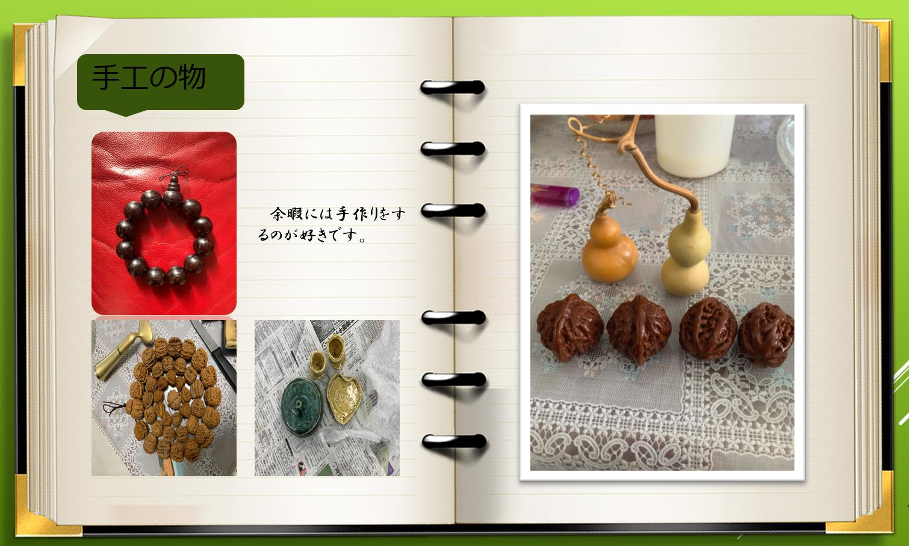
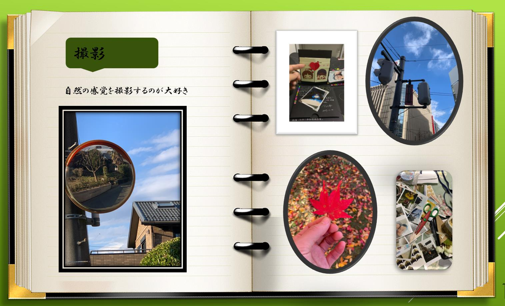
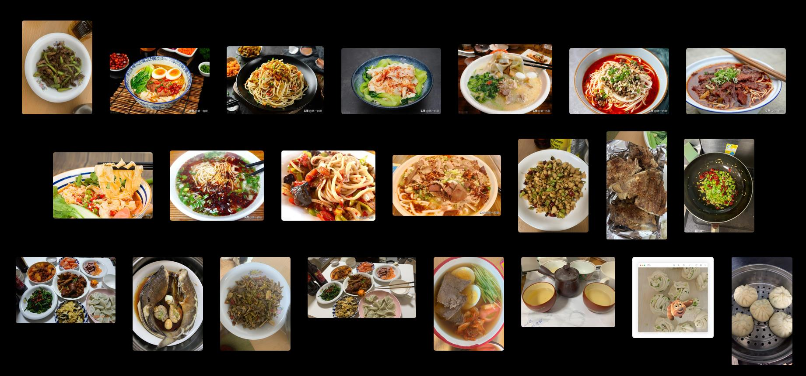
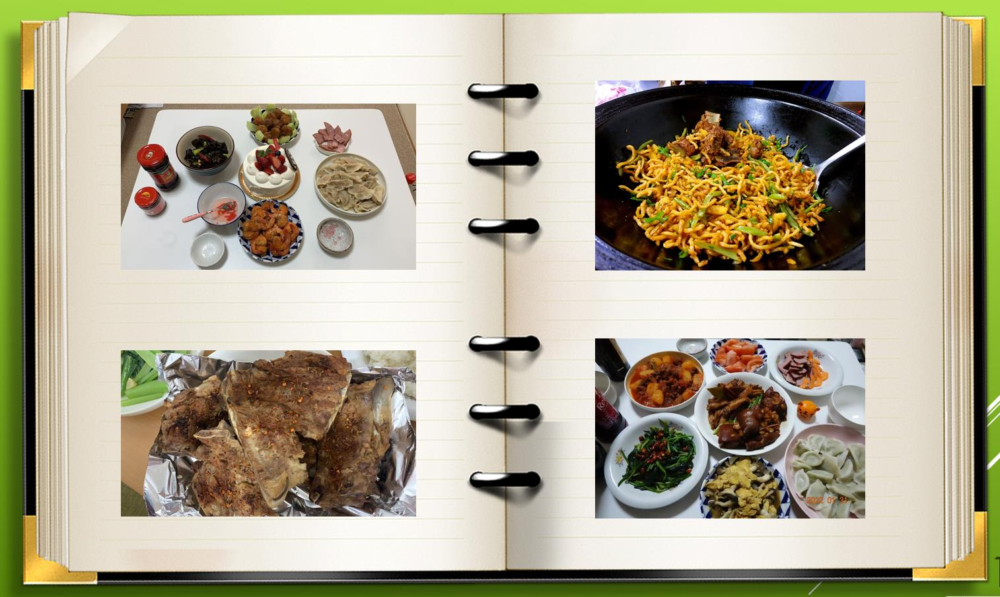
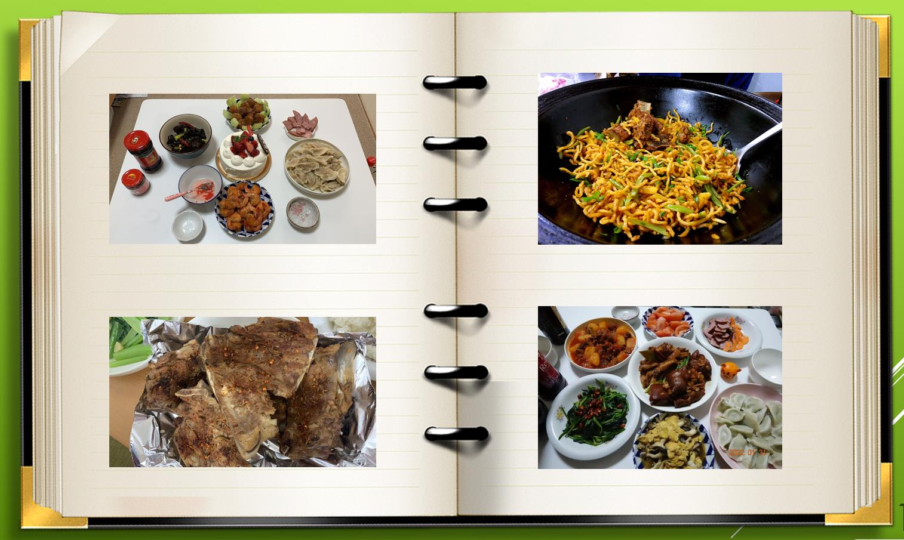

スポーツが好き

私にとって、スポーツは体と心の健康を保つ重要な手段です。アウトドアランニング、バスケットボール、サイクリングが好きです。
手作り と スマートフォン写真


毎晩寝る前に良い本を読むのが好きです。様々なジャンルのストーリーや知識を探求するのが楽しみです。
食べ物探求
グルメ愛好者であり、様々な料理を試し、さまざまな味と風味を楽しむのが好きです。
私は美食が大好きで、たくさんの美食を試しましたが、中でも一番好きなのはラーメンです。中国にいたとき、どこに行っても地元の特色ある軽食や麺料理を知るようにしていました。中国にはおそらく少なくとも10種類以上のラーメンがあり、私自身も7、8種類以上を試した記憶があります。その中でも一番好きなのは蘭州ラーメンで、次に北京の炸醤麺です。日本に来てからも、たくさんのラーメンを試しましたが、どれも非常に美味でした。
休暇の時には、簡単な料理も自分で作ります。以下は今年の新年に作ったものです。
 

ゲーム と 映画 の世界

冒険と挑戦を求めてゲームの世界で遊ぶのが好きです。特にパズルとアドベンチャーゲームが大好きです。
歌を歌う

音楽への愛情から、暇な時間に歌を歌うことが好きです。気持ちをリリースするためです。
車の修理

私は車の修理が趣味です。エンジンのトラブルを診断し、オイル交換、ブレーキ交換、タイヤ交換などの基本的な整備作業を行うことができます。
車の修理は私にとってストレス解消の方法でもあります。自分の車を自分で修理することで、車に対する理解と親近感が深まります。